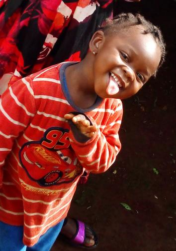

- Home
- Explore
- Notifications
- Messages
- Bookmarks
- List
- Profile
- More
Home
- what's happenig?
- Fri @sktch-comedyfan.3m
Giving standup a go.open mic starts at 7,hit me up if you want
ticket #heregoesnothing
1
5
8
Cythia@h_wang88.10m
vacation is going great!
vacation is going great!

3 5 14

Destiny @e-dabi.3m💕
how many lemons do i need to make lemonade?
how many lemons do i need to make lemonade?
Trends for you
Trending worldwilde
#BreakingNews
10,094 people are tweeting about this
Trending worldwilde
#WorldNews
125k Tweets5,094 people are tweeting about this
Trending worldwilde
#BreakingNews
2,757 people are tweeting about this
Trending worldwilde
#GreatestOfAllTime 100k Tweets
4,123 people are tweeting about this